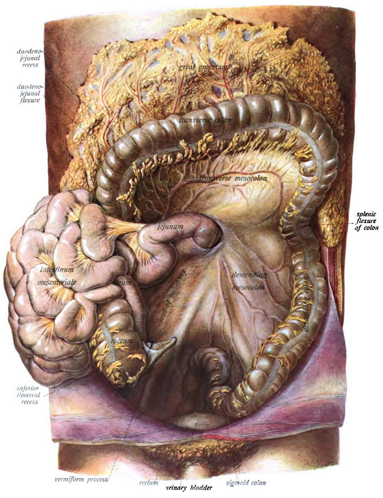
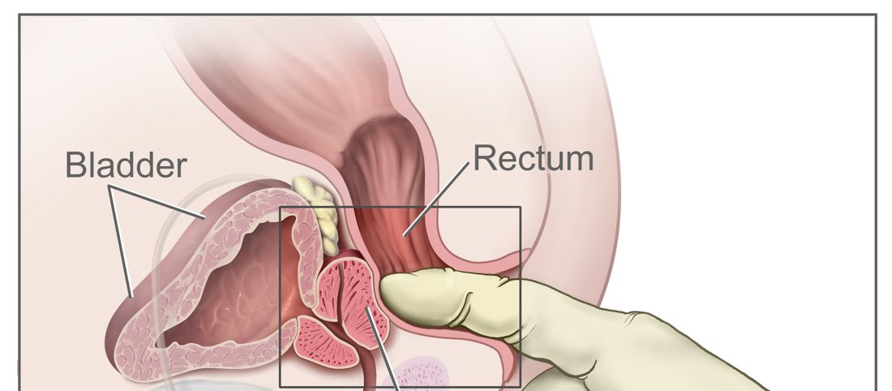
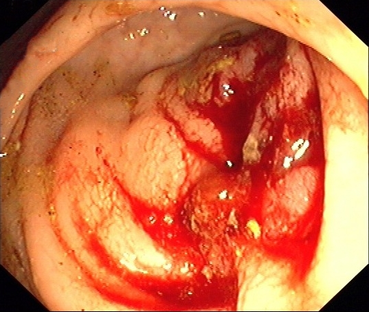
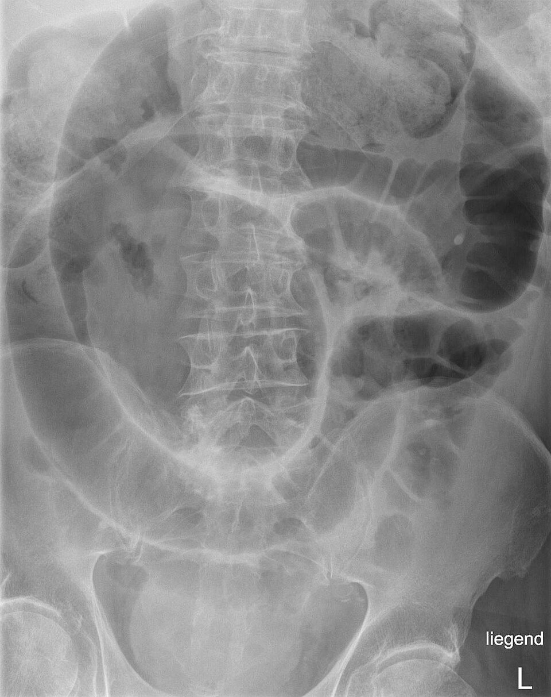
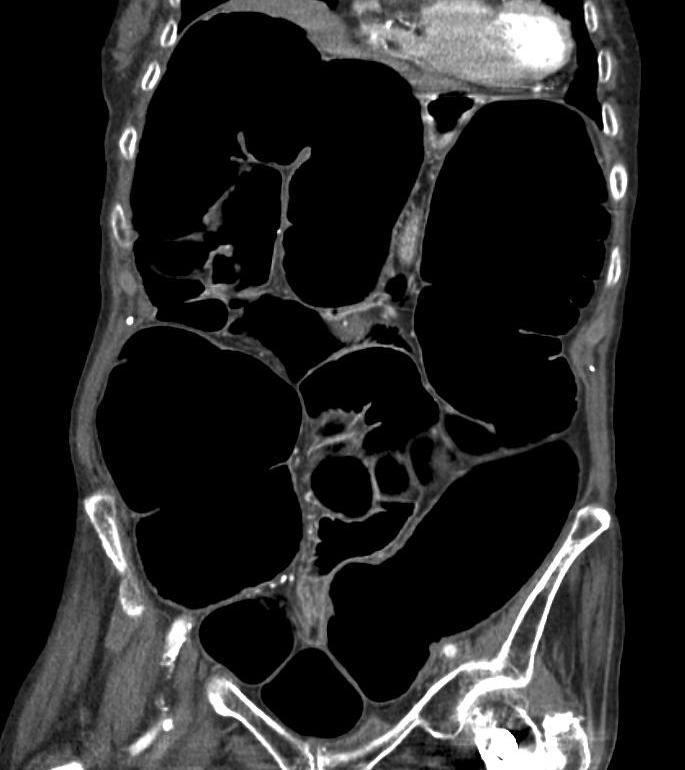

חסימות קולוניות
וולבולוס, גידול חוסם ופסאודו-חסימה (אוגילבי): איך מזהים, מה בודקים ומתי רצים לחדר ניתוח
בסוף המפגש תדעו
- להגדיר חסימה של המעי הגס ולמיין את הסיבות: מכנית (בתוך החלל, בדופן, מבחוץ) או תפקודית
- להסביר חסימה בלולאה סגורה, את תפקיד המסתם האילאו-צקאלי ולמה דווקא הצקום מתנקב
- לבצע בירור מסודר: אנמנזה, בדיקה כולל מפשעות ובדיקה רקטלית, מעבדה, צילום בטן ו-CT
- לזהות וולבולוס של הסיגמה ושל הצקום ולדעת את סדר הטיפול בכל אחד
- להכיר את עקרונות הטיפול בגידול חוסם: ימין מול שמאל, סטנט כגשר לניתוח ומתי מוציאים סטומה
- לזהות תסמונת אוגילבי ולטפל בה בשלבים, משמירה ועד ניתוח
מה חוסם את המעי הגס?
חסימה של המעי הגס היא חסימה דיסטלית למסתם האילאו-צקאלי. שתי משפחות גדולות: מכנית ותפקודית
- גידול (הסיבה השכיחה במערב)
- גוף זר, בזואר
- צואה דחוסה
- היצרות על רקע מחלת סעיפים
- היצרות בקרוהן, איסכמיה או אחרי קרינה
- זיהומים, הירשפרונג
- וולבולוס של הסיגמה או הצקום
- בקע (מפשעתי, בטני, פנימי)
- גידול גרורתי, מורסה, פיברוזיס רטרופריטונאלי
- הידבקויות: נדיר במעי הגס
מי חוסם את מי
- בארה״ב הסיבה המכנית השכיחה היא סרטן המעי הגס. וולבולוס שכיח יותר במזרח אירופה, באפריקה, בהודו ובמזרח התיכון
- האתר השכיח של וולבולוס הוא הסיגמה. גם הצקום יכול להסתובב
- חסימה היא הסיבה לרוב ההופעות הדחופות של סרטן המעי הגס
מסגרת המעי הגס: איפה זה קורה

👆 לחצו על אזור בציור כדי לקרוא עליו
הקוטר הרחב ביותר (בממוצע 7.5 ס״מ) והדופן הדקה ביותר. לפי חוק לפלס הוא נמתח ראשון ולכן מתנקב בצקום גם כשהגידול בסיגמה. צקום ניע במיוחד יכול להסתובב (וולבולוס) או להתקפל קדימה (bascule). באוגילבי קוטר מעל 12 ס״מ הוא סימן אזהרה
בפסאודו-חסימה ההרחבה יכולה להיות מסיבית גם כאן. גידול בכפיפה הכבדית הוא חסימה ימנית: כריתה אונקולוגית של צד ימין, בדרך כלל עם השקה ראשונית
קבוע לרטרופריטונאום ולכן לא מסתובב. רוב החסימות הממאירות הן בצד שמאל, כי שם הגידולים צומחים מסביב לחלל (בצד ימין הם בדרך כלל פוליפואידיים)
לולאה ניידת על מזנטריום ארוך: האתר השכיח של וולבולוס. סיבוב סביב המזנטריום יוצר לולאה סגורה. מתחתיה הרקטום: גידול חוסם ברקטום הנמוך והאמצעי מקבל קודם סטומה מסיטה ואז כימו-קרינה
למה חסימה במעי הגס מסוכנת
איך זה נראה בחדר המיון
חסימה מכנית
- כאב קוליקי, פריסטלטיקה מוגברת. בחסימה ממושכת: קולות מעיים מעטים
- לא יוצאים גזים וצואה, הבטן הולכת ומתנפחת
- חריפה: כאב, תפיחות ורגישות שמתפתחים מהר
- מתקדמת לאט: עצירות שמחמירה, צואה דקה כעיפרון, כאב לסירוגין. זה הסיפור הקלאסי של גידול שמאלי
חסימה תפקודית
- תפיחות, כאב עמום, קולות מעיים חלשים או חסרים
הבדיקה: בטן, מפשעות ואצבע
- הסתכלות: תפיחות, צלקות (מפה של ניתוחים קודמים), בקעים
- ניקוש ומישוש: טימפני? גוש? הרגישות המקסימלית איפה? שומרים על ברכיים כפופות כדי שהשרירים ירפו
- פריטוניטיס: התגוננות לא רצונית, קשיחות, כאב בשחרור
- מפשעות: חובה. בקע כלוא הוא סיבה לחסימה של המעי הגס
- בדיקה רקטלית: גידול? צואה דחוסה? דם?
- שמיעה: רגישות וסגוליות נמוכות. לא מחליטים לפיה

מעבדה והדמיה

חדר ניתוח עכשיו, או טיפול לפי הסיבה?
הסיגמה מול הצקום
- סיבוב של הלולאה סביב המזנטריום: לולאה סגורה
- צילום: "צינור פנימי מקופל", "פולי קפה"
- CT: מערבולת במזנטריום
- אין איסכמיה: התרה בסיגמואידוסקופ קשיח או גמיש ושרוול רקטלי מעל הפיתול
- הצליח: כריתה מתוכננת של הסיגמה עם השקה ראשונית, כי החזרה שכיחה
- נכשל: ניתוח, כריתה וקולוסטומיה (הרטמן)
- צקום וקולון עולה ניידים באופן לא תקין
- הטיפול: כריתה והשקה ראשונית
- השקה נדחית כשהסיכון לדליפה גבוה: מעי לא חיוני, אלח דם, תת-לחץ דם

סרטן חוסם: ימין ושמאל
סטנט כגשר לניתוח
- משחרר את החסימה ונותן זמן: לאזן את המטופל ולעיתים לתת כימותרפיה לפני ניתוח
- יותר השקות ראשוניות, פחות זיהומי פצע, יותר ניתוחים לפרוסקופיים
- מתאים במיוחד למטופלים בסיכון ניתוחי גבוה ולפליאציה
- סיבוכים: תזוזה, נקב, חסימה חוזרת
- אסור בחשד לאיסכמיה או לנקב
תסמונת אוגילבי
- מה זה: הרחבה חריפה של המעי הגס בלי חסימה מכנית. כנראה חוסר איזון אוטונומי (יותר סימפתטי)
- מי: מבוגר עם מחלות רקע, מאושפז בגלל מחלה חריפה או אחרי ניתוח (אורתופדי, עמוד שדרה, לב, השתלה), אחרי לידה או קיסרי, נוירולוגי (פרקינסון, שבץ), אי ספיקת לב, COPD, חבלה קשה וכוויות
- תרופות: אופיאטים, אנטיכולינרגיות, נגד פרקינסון, אנטי-פסיכוטיות, קלונידין
- צילום: קולון מורחב, הכי רחב בצקום ובצד ימין (עד 10–12 ס״מ). גז עד הרקטום תומך באוגילבי. בחסימה מכנית אין כמעט גז מעבר לחסימה
- CT: הבדיקה המאשרת. מבדיל ממכני ומחפש איסכמיה
- אבחנה מבדלת: חסימה מכנית, מגה-קולון טוקסי מ-C. difficile

סולם הטיפול
מה מכינים בזמן שמזמינים חדר
- שני עירויים טובים, נוזלים או דם לפי הצורך, תיקון אלקטרוליטים
- סוג והצלבה, תפקודי קרישה, תרביות דם, לקטט
- אנטיביוטיקה רחבת טווח: גרם-שליליים של המעי ואנאירובים
- זונדה, קטטר שתן וקווים לפי המצב. א.ק.ג וצילום חזה לא מעכבים
- לתאם מראש מיטה בטיפול נמרץ אם צריך
מחקרים שכדאי להכיר
245 מטופלים עם גידול חוסם בצד שמאל. אין הבדל בתמותה ב-30 יום (3.6% לעומת 5.6%) ובאורך האשפוז. בכוונה מרפאת: פחות סטומות עם סטנט (47.5% לעומת 67.9%). אין הבדל בחזרת הגידול אחרי 3 שנים
CReST Collaborative Group. Br J Surg 2022;109(11):1073-8019 מחקרים (אקראיים ומותאמים). סטנט כגשר: פחות סטומות קבועות, יותר השקות ראשוניות ויותר ניתוחים זעיר-פולשניים, פחות סיבוכים ותמותה ב-90 יום. אין הבדל בהישרדות
McHugh FT et al. Dis Colon Rectum 2024;67(7):878-9416 מחקרים. הצלחה בפעולה הראשונה 78.8%, הצלחה כוללת 91.5%, נקב 0.9%, חזרה 17.1%. הפעולה הראשונה הצליחה יותר ממנה ראשונה של ניאוסטיגמין. רוב המחקרים לא אקראיים
Giri S et al. World J Crit Care Med 2025;14(3):102733חמישה דברים לקחת למחלקה
- בטן תפוחה בלי גזים: קודם לשלול לולאה סגורה, איסכמיה ונקב. פריטוניטיס = חדר ניתוח
- תמיד לבדוק מפשעות ולעשות בדיקה רקטלית
- הצקום הוא שמתנקב, גם כשהחסימה בסיגמה. צקום מעל 12 ס״מ מדאיג
- וולבולוס של הסיגמה בלי איסכמיה: התרה אנדוסקופית ואחר כך כריתה מתוכננת. בצקום: כריתה
- אוגילבי: שמרני, ניאוסטיגמין, קולונוסקופיה ורק אז ניתוח. בלי משלשלים